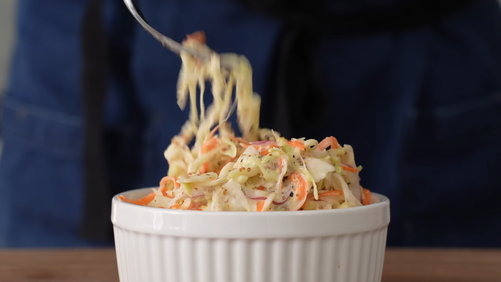

Creamy Cole Slaw

Description
Creamy cole slaw for a cool refreshing side for your summer barbecues!
Ingredients
- 500g or 9c cabbage, thinly sliced
- 100g or 2 large carrots, julienned
- 100g or 1 small bulb fennel, thinly shaved
- 100g or 1/2 small red onion, thinly sliced and rinsed
- 3-5 cloves garlic, minced/pressed
- 30g or 1 3/4Tbsp salt (for cure)
- 20g or 1 2/3Tbsp sugar (for cure)
- 150g or 3/4c mayo
- 30g or 2Tbsp grainy mustard
- 30g or 2Tbsp apple cider vinegar
- 30g or 2 1/3Tbsp sugar (for dressing)
- 2g or 1tsp black pepper
Steps
- Combine veggies and garlic in a bowl and mix with the 30g salt and 20g sugar
- Cover and allow mixture to sit and cure for 30 minutes
- Transfer to a salad spinner and spin to drain. Transfer back into dry bowl
- Add mayo, mustard, vinegar, 30g sugar, and black pepper into a high sided container or blender and blend with immersion blender
- Drizzle most of dressing over the slaw mix and fold to toss
- Add more dressing to taste as needed